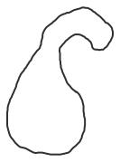
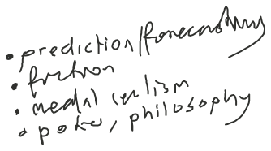
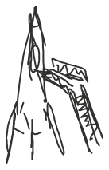

Why I Don't Take Your Argument Against Continued AI Progress Seriously Even Though I Agree It Sounds Right
What Life Might Be Like After We Get Aligned AI
Some Forecasts With Respect to AI Capabilities
If You Think Everyone Else Around You Is a Moron You Should Conclude That You Are a Moron Too Even If You're Really Sure That You're Obviously Smart and Get Lots of Feedback Which Tells You That You Really Are Smart
Some Contrarian Views on Things Which Aren't Race and Gender
What I Would Do Were I Selfish
The Day of ASI
The Possible Futures
Markets Really Don't Seem to Be Efficient
Moronity / the Limits of Human Capabilities

Some Things I Learned Over the Last Two Years
On Swarm Intelligence
What Comes After Swarm Intelligence
On Creativity of LLMs
A Collection of Interesting Prediction Markets on AI and My Thoughts Thereof
Robotics and AI

How One Can Prepare for the Intelligence Explosion
LLMs as Self Sustaining Entities
Neuromancer and AI
The Feasability of Dune's Butlerian Jihad
Thoughts on American Culture
Taking Epistemic Humility Seriously
What I Do Well That Others Do Not
What I Ought Improve At
Reflections on Having Lived in Many Places
How AI Will Effect Developing Economies
On Various Common Views on AGI and ASI
On How to Approach Learning to Write

On How to Approach Making Friends at Inkhaven
On Making the Most of Inkhaven
On Optimising Writing Such That People of Various Levels of Knowledge, Interest, Attention, Etc. All Can Enjoy and Read an Article
On Video Games, Drinking, and Other Vices.
On How 500 Words Is Really a Lot of Words
On How Utopic Current AI Is
If I Were in a Simulation, Might It Look a Bit Like This?
What Is an Ancestor Simulation and Does It Make Sense to Suspect We Might Be in One?
On Cosmological Natural Selection
Is It True That It's Best to Write Blog Posts After Having Figured Things Out?
On Aura
How Jim Became Jim and What We Can Learn From Jim's Story
On the Surprising Utility and Autility of Prediction Markets
My Problems With Rationalist Arguments on AI
A Chronology of Future Technological Development
Thoughts on Ambition and Its Alternatives and Balance
My Personality
I Hate Taxi Drivers Talking to Me; I Love Waymo Cars
Against Catboys
The Qualities of the People I Have Most Enjoyed Meeting and of Those Who I Have Most Enjoyed Spending Extended Periods of Time and the Differences If Any Between Those Two Things and of My Extended Period of Isolation of My Youth.